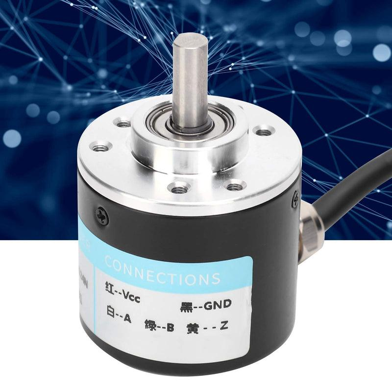

01_Incremental - Incremental: A/B/Z pulses, relative position
1. What is an incremental encoder?
An incremental encoder is a feedback device that generates electrical pulses as a shaft or linear mechanism moves. A controller or drive counts these pulses to determine changes in position and, using the pulse timing, estimate speed.
Incremental encoders are commonly used with servo motors, conveyors, rotary indexing tables, CNC equipment, and other industrial motion systems.
Unlike an absolute encoder, a basic incremental encoder does not inherently provide a unique shaft-position value immediately after power-up. The controller must track movement from a known reference or establish a reference through homing.

Key terminology
- Pulse: An electrical transition or pulse event produced as the encoder moves.
- Resolution: The amount of movement represented by the encoder's specified pulse or count convention.
- A and B channels: Two periodic signals offset in phase, commonly used to determine movement and direction.
- Z channel: A reference or index signal that occurs at a defined position, commonly once per revolution.
- Quadrature: The A/B signal arrangement in which the two channels are separated by approximately one-quarter of a signal cycle.
- Relative position: Position calculated as movement relative to a previously established reference.
The encoder produces signals. The drive, counter module, or controller interprets those signals and calculates position.
2. How an incremental encoder works
Imagine an encoder attached to a rotating motor shaft. As the shaft rotates, the encoder generates pulses.
Motor shaft rotates
|
v
Encoder detects movement
|
v
A/B electrical pulse signals
|
v
Drive or high-speed counter
|
v
Pulse count and direction
|
v
Relative position and speed
If the controller counts 1,000 interpreted counts while the shaft rotates forward, the calculated position increases by 1,000 counts. If the shaft reverses, the count decreases.
The controller can convert this count into engineering units such as degrees, revolutions, millimetres, or metres using the encoder resolution and mechanical transmission ratio.
3. A and B channels: direction detection
The A and B channels are periodic signals with a phase offset. This arrangement is called quadrature encoding.
The channel that leads the other indicates the direction of rotation. Which direction is labelled forward depends on the encoder wiring, signal convention, and controller configuration.
Example of quadrature signals
Time --->
A: __----____----____----__
B: ____----____----____----
The exact waveform depends on the direction of rotation and signal convention. The important point is that A and B do not change state simultaneously under normal quadrature operation.
If A leads B, the controller interprets one direction. If B leads A, it interprets the opposite direction.
Why two channels are useful
A single pulse channel can indicate movement, but it cannot reliably distinguish both directions on its own. Two phase-shifted channels allow a quadrature decoder to determine direction from the order of transitions.
This is important in applications such as:
- Servo axes that accelerate and reverse.
- CNC axes moving in both directions.
- Conveyor position tracking.
- Rotary indexing systems.
- Measuring wheels that may reverse.
A/B wiring, polarity, and direction configuration must match the manufacturer's documentation. Incorrect configuration can cause position counts to move in the wrong direction.
4. The Z channel: index or reference pulse
The Z channel, also called the index or reference channel, produces a reference signal at a defined angular position. In many rotary incremental encoders, it generates one index pulse per revolution, although the exact implementation depends on the encoder.
A/B signals track incremental movement. The Z signal provides a repeatable reference point within a revolution.
A: __----____----____----____----__
B: ____----____----____----____----
Z: ____________________----_________
^
Index position
This is a simplified conceptual diagram. Actual Z pulse width, polarity, and alignment vary by encoder.
Why Z is useful
- Establishing a repeatable reference during homing.
- Identifying a specific shaft angle.
- Checking the relationship between encoder counts and shaft rotation.
- Supporting reference-position procedures on suitable motion systems.
Important: An index pulse is not automatically the machine's home position. The controller may need to detect a home switch first and then use the Z pulse to establish a precise reference. The actual homing sequence depends on the controller and machine configuration.
If the shaft starts at an unknown position, the Z channel alone may not immediately tell the controller the absolute shaft angle. The controller must locate the index or use another reference procedure.
5. PPR, CPR and quadrature counting
Encoder resolution terminology can be confusing because manufacturers do not always use the terms PPR and CPR in the same way.
- PPR: Pulses per revolution, usually referring to the specified pulse cycles on a channel.
- CPR: Counts per revolution, which may refer to decoded counts or, in some product documentation, pulse cycles. Always verify the manufacturer's definition.
- x1 decoding: Counts one selected edge per cycle of one channel.
- x2 decoding: Counts both edges of one channel.
- x4 decoding: Counts both rising and falling edges of both A and B channels.
For an encoder specified as 1,000 A-channel pulse cycles per revolution, conventional quadrature x4 decoding produces:
This result assumes x4 decoding and the stated PPR convention.
| Decoding method | Counts per A-channel cycle | Counts per revolution for 1,000 PPR |
|---|---|---|
| x1 | 1 | 1,000 |
| x2 | 2 | 2,000 |
| x4 | 4 | 4,000 |
The drive or high-speed counter's decoding configuration must match the resolution used in position calculations. Otherwise, the reported position can be wrong by a factor of two or four.
Example: angular resolution
Suppose an encoder provides 1,000 PPR and the controller uses x4 decoding.
Counts per revolution = 4,000.
The angular movement per decoded count is:
This is the nominal count increment at the encoder shaft. It is not a guarantee of total machine positioning accuracy. Mechanical backlash, compliance, mounting errors, signal quality, and other factors can reduce actual accuracy.
6. Converting encoder counts into machine position
The encoder typically reports counts. A controller or drive converts those counts into meaningful position units.
6.1 Rotary position
If the controller uses signed count changes relative to a reference:
Example
- Encoder: 2,500 PPR.
- Decoding: x4.
- Counts per revolution: 10,000.
- Count difference: 2,500.
The shaft has moved 90 degrees relative to the reference, assuming the count direction and scaling are correct.
6.2 Linear position using a ball screw
For an axis driven directly by a ball screw:
Suppose:
- Decoded resolution: 10,000 counts per motor revolution.
- Ball-screw lead: 10 mm per screw revolution.
- Motor and screw are directly coupled.
- Count difference: 2,500.
Then:
The axis moves 2.5 mm relative to its reference, assuming no gearing between motor and screw.
6.3 When a gearbox is present
A gearbox changes the relationship between motor rotation and load movement.
If the motor makes 5 revolutions for every 1 output revolution, the gearbox ratio is 5:1. For an output mechanism that moves 20 mm per output revolution, motor-side encoder movement corresponds to:
If the motor encoder provides 10,000 decoded counts per motor revolution:
That equals 0.4 micrometres per count mathematically. However, the real machine cannot necessarily achieve that accuracy because resolution, repeatability, backlash, compliance, and other mechanical effects are different quantities.
7. Calculating speed from encoder pulses
An incremental encoder can be used to calculate speed by measuring the number of pulses or decoded counts occurring over a known time interval.
For decoded counts:
Example
A controller reads 20,000 decoded counts per second. The encoder resolution is 4,000 decoded counts per revolution.
The shaft speed is 300 RPM, assuming the counts are measured correctly and the resolution convention matches the calculation.
Alternative: pulse frequency
For an encoder specified as 1,000 PPR, with an A-channel frequency of 5,000 pulse cycles per second:
This calculation uses A-channel pulse-cycle frequency, not x4 decoded count frequency.
Why measurement method matters
Speed estimation depends on the measurement method:
- Count over a time window: Simple, but low speeds may produce few counts per window.
- Time between pulses: Useful at low speed, but requires reliable timing and signal detection.
- Drive-based estimation: A servo drive may use encoder feedback and internal algorithms to estimate speed.
The selected method affects response, noise sensitivity, and low-speed resolution.
8. Incremental encoder electrical interfaces
Not all incremental encoders use the same output circuitry or signal voltage.
| Interface | General description | Important consideration |
|---|---|---|
| TTL or RS-422 differential line driver | Often uses differential A/A̅, B/B̅ and Z/Z̅ signals | Requires compatible differential receiver and correct termination practices |
| HTL or push-pull output | Commonly uses higher-voltage digital signals, depending on model | Receiver input voltage and signal type must be compatible |
| Open-collector output | Transistor switches the output according to its design | Requires suitable pull-up circuitry and compatible voltage/current limits |
| Single-ended output | Signal is measured relative to a common reference | More sensitive to common-ground differences and electrical noise than a properly implemented differential link |
The exact voltage levels, maximum frequency, output current, and wiring rules are product-specific.
Differential signals
Some encoders transmit complementary signal pairs such as A and A̅. A differential receiver evaluates the voltage difference between the pair, helping reject electrical noise picked up similarly by both wires.
This is useful in electrically noisy industrial environments containing VFDs, servo drives, contactors, welding equipment, and long cable runs.
Wiring and grounding
- Use the cable type specified by the encoder manufacturer.
- Follow the prescribed shield termination and grounding arrangement.
- Separate feedback cables from motor power cables where required.
- Use compatible receivers and voltage levels.
- Follow manufacturer guidance for cable length and signal termination.
- Never assume that two encoders with the same connector pin count use the same pinout.
Incorrect feedback wiring can cause missed counts, false counts, intermittent position errors, or equipment damage.
9. Incremental encoders in servo systems
In a servo system, encoder feedback supports closed-loop control. The drive or motion controller compares commanded movement with measured movement and adjusts motor operation.
Position command
|
v
Motion controller / drive
|
v
Servo motor and mechanism
|
v
Incremental encoder
|
| A/B feedback
| Z index, if provided
v
Position and speed calculation
|
v
Feedback control
Many servo drives use specialized encoder interfaces and feedback protocols. A basic A/B/Z incremental encoder is only one type of feedback system. Some servo motors instead use absolute encoders or proprietary serial feedback interfaces.
Do not assume that an incremental encoder intended for a PLC high-speed counter can replace the motor feedback device expected by a servo drive.
Incremental encoder versus an ordinary proximity sensor
A proximity sensor can detect the presence of a target. An incremental encoder generates a sequence of pulses that can represent much finer movement.
For example, a proximity sensor may detect each conveyor pallet as it passes. An encoder on a conveyor drive can track the conveyor's incremental movement between pallet detections.
These devices can complement one another: the encoder tracks movement, while a sensor can identify a reference object or machine event.
10. Relative position, homing and power loss
Incremental encoders track changes in position. The controller maintains a position count by processing the encoder signals.
For example:
Reference established: 0 counts
Move forward: +2500 counts
Move forward: +1500 counts
Move backward: -500 counts
--------------------------------
Current count: 3500 counts
The current position is 3,500 counts relative to the established reference.
If the controller loses the count or loses power, a basic incremental encoder generally cannot independently provide the shaft's absolute position when the system restarts. The position must be restored through a supported retained-count strategy or a reference procedure.
Homing sequence example
A machine might use this sequence:
- Move toward a home switch at a controlled speed.
- Detect the home switch.
- Change to a slower search speed if the procedure requires it.
- Detect the encoder index pulse if the homing method uses one.
- Establish the reference position.
- Apply the configured coordinate offset.
- Confirm that the axis is homed before permitting normal positioning.
Actual homing sequences differ by controller, encoder, machine mechanics, and risk assessment.
Key distinction: The home switch identifies a physical reference region; the encoder index can provide a repeatable reference point within a revolution. Neither automatically guarantees that the machine's entire coordinate system is correctly calibrated.
11. Common faults and troubleshooting
| Symptom | Possible cause | Diagnostic approach |
|---|---|---|
| Position count does not change | Missing supply, broken cable, disabled counter, incorrect input configuration | Verify encoder power, signal presence and receiver configuration |
| Position changes in the wrong direction | A/B phase interpretation or direction configuration is incorrect | Verify channel sequence and configured direction |
| Position jumps randomly | Electrical noise, poor shielding, loose connections, missed or false counts | Inspect cable routing, signal quality and connections |
| Position is off by a factor of 2 or 4 | Incorrect x1/x2/x4 decoding assumption | Compare encoder PPR with the receiver's decoding mode |
| Position drifts after movement | Missed counts, mechanical slip, loose coupling, incorrect scaling | Compare encoder counts with a known physical movement |
| Homing fails | Home sensor fault, incorrect direction, missed Z pulse, wrong homing settings | Check the homing sequence and sensor/encoder diagnostics |
| Speed reading fluctuates | Poor signal quality, low pulse rate, measurement-window limitations | Check signal quality and the speed calculation method |
| Encoder works at low speed but fails at high speed | Input frequency limit, cable or receiver bandwidth, signal integrity | Verify maximum frequency and receiver specifications |
| PLC counter stops counting | Counter disabled, wrong channel assignment, input filter too slow, frequency exceeded | Verify hardware configuration and high-speed counter limits |
Safe troubleshooting procedure
- Record the fault and current machine state.
- Follow the machine's isolation and access procedure before inspecting wiring.
- Verify encoder supply voltage and the correct pinout.
- Inspect connectors, cable routing, shielding and mechanical coupling.
- Check A/B signal activity using suitable test equipment and manufacturer guidance.
- Verify input frequency limits and counter decoding configuration.
- Compare calculated movement with a known physical reference.
- Recheck homing and scaling after corrections.
Do not disconnect or reconnect encoder feedback while the drive is energized unless the manufacturer explicitly permits it. On a servo axis, feedback loss can cause a fault or unexpected behavior.
12. Interview questions and answers
1. What is an incremental encoder?
A feedback device that generates pulses corresponding to movement, allowing a compatible controller or drive to calculate relative position and speed.
2. What is the function of the A and B channels?
They provide phase-shifted signals used to count movement and determine direction.
3. What is the Z channel?
An index or reference signal generated at a defined position, commonly once per revolution on rotary encoders.
4. What is quadrature decoding?
Decoding the relative phase of A and B signals to determine movement direction and count transitions.
5. What does 1,000 PPR mean?
Typically, 1,000 pulse cycles per revolution on the specified channel, but the manufacturer's definition must be verified.
6. Why can a 1,000 PPR encoder provide 4,000 counts per revolution?
A quadrature receiver using x4 decoding counts four transitions per A-channel cycle.
7. How does an incremental encoder calculate speed?
By measuring pulse or decoded-count frequency, or the time between successive signal events.
8. Why does an incremental encoder usually need homing?
Its basic pulse output represents movement rather than a unique absolute shaft position. Homing establishes a known reference.
9. Can an incremental encoder determine direction using only channel A?
Not reliably in a standard single-channel arrangement. A/B quadrature provides direction information.
10. What happens if A and B are swapped?
The interpreted direction may reverse, depending on the receiver and wiring convention.
11. Why are differential encoder signals useful?
They improve noise immunity when used with a compatible differential receiver and correctly installed cable.
12. Why might the encoder position be correct at low speed but wrong at high speed?
The receiver may exceed its maximum input frequency, or signal integrity problems may cause missed or false counts.
13. Does encoder resolution equal positioning accuracy?
No. Resolution describes the nominal measurement increment. Actual positioning accuracy also depends on mechanics, calibration, feedback quality and control behavior.
14. Can an ordinary incremental encoder always replace a servo motor's feedback device?
No. The drive must support the encoder's electrical interface, signal format, resolution and feedback requirements.
15. What is the difference between a home switch and the Z index?
The home switch detects a physical reference location or region. The Z index provides an encoder reference event at a defined shaft position.
13. Practical exercises
Exercise 1: Calculate rotary position
An encoder provides 2,000 PPR. The receiver uses x4 decoding. The controller counts 3,000 net counts from the reference.
Calculate the angular movement.
- Decoded counts per revolution: \(2000 \times 4 = 8000\).
- Movement: \(3000/8000 \times 360^\circ\).
- Answer: 135 degrees, relative to the reference.
Exercise 2: Calculate linear movement
A motor encoder provides 10,000 decoded counts per revolution. The motor directly drives a ball screw with a 5 mm lead. The controller records 6,000 net counts.
Answer: 3 mm, assuming direct coupling and correct scaling.
Exercise 3: Diagnose incorrect travel
A linear axis is commanded to move 100 mm, but the reported movement is 400 mm.
Investigate:
- Whether the encoder PPR is confused with decoded counts.
- Whether x1, x2 or x4 decoding is configured correctly.
- Whether the electronic gearing or scaling is correct.
- Whether the ball-screw lead and gearbox ratio are entered correctly.
- Whether the controller expects motor-side or load-side feedback.
Do not correct the error by arbitrarily changing the commanded travel. Identify the scaling error first.
Exercise 4: Diagnose loss of reference
An incremental-encoder axis loses its known position after a power interruption.
Determine whether the system supports retained counts, whether the count data remained valid, and whether the approved homing sequence must be repeated. Verify that the mechanical axis can home safely before initiating movement.
14. Final mental model
- A and B: Track movement and reveal direction.
- Z: Provides an index or reference event.
- Pulse/count resolution: Converts signal transitions into nominal position increments.
- Pulse frequency: Supports speed calculation.
- Controller or drive: Interprets the signals and maintains the position count.
- Homing: Establishes the machine's known reference.
- Mechanical system: Determines how encoder movement translates into actual load movement.
The central idea is simple: an incremental encoder tells the control system how far the shaft has moved relative to its tracked reference, not necessarily where the shaft is in absolute terms after power loss.
Next topic: 02_PLAN_WISE_2026\02_INDUSTRY3_0\02_Auto_Tech\06_Servo_Motion\03_Encoder\02_Absolute
02_Absolute - Absolute: Position kept after power-off